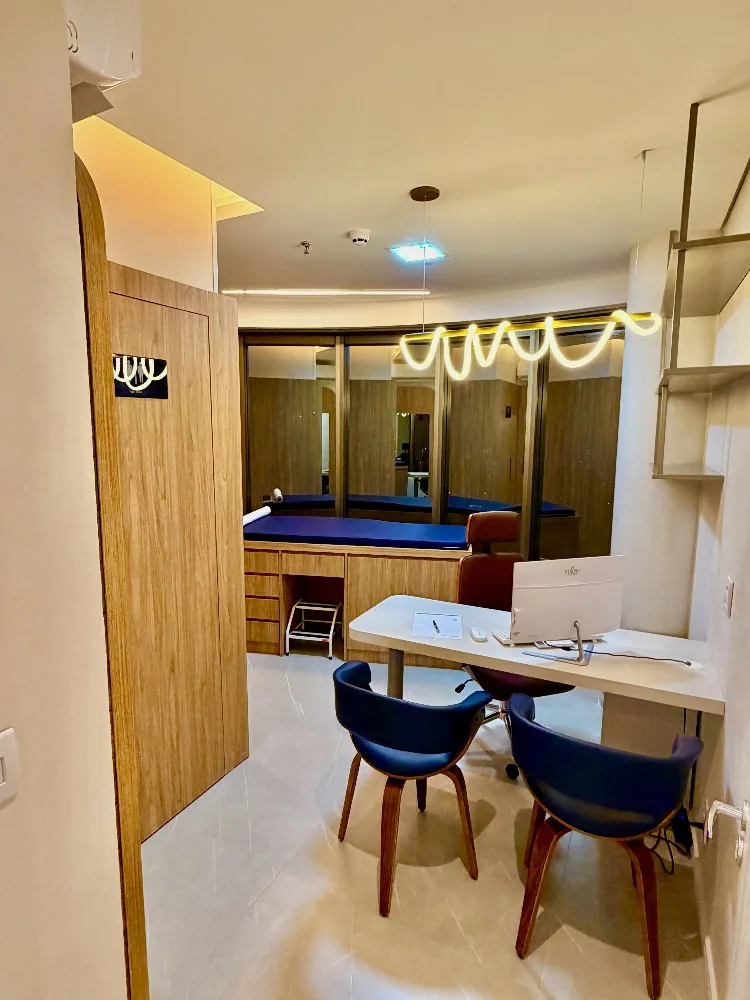
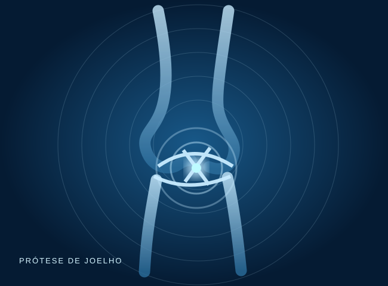
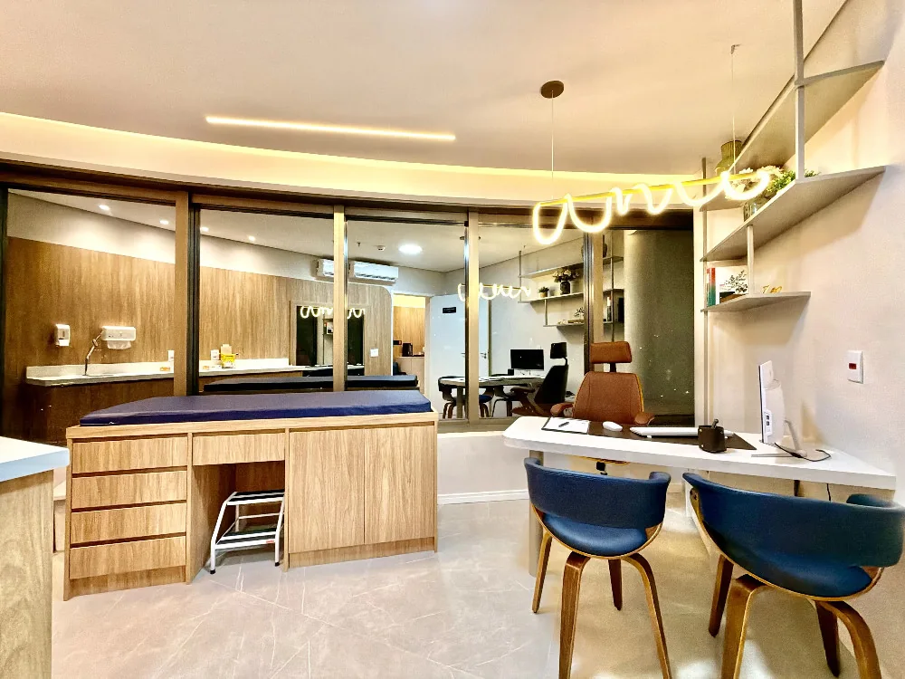
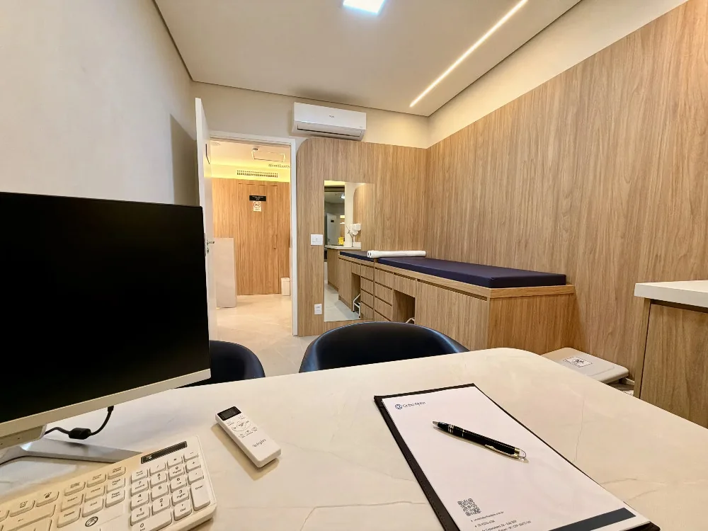

Uma clínica criada para olhar além da dor.
Duas trajetórias unidas pelo cuidado especializado com o joelho, a escuta e a decisão clínica responsável.

Duas trajetórias.
Um propósito.
Fundada em 2025 por dois especialistas que se conheceram durante a formação em cirurgia do joelho, a Ortho Alpha nasceu para oferecer tempo, clareza e atenção em cada decisão.
Antes de indicar,
nós escutamos.
Não existe tratamento igual para todos. Cada plano considera exame clínico, imagens, atividades e expectativas.
Escuta
Entendemos sua história e o que a dor limita.
Diagnóstico
Investigação detalhada, sem decisões apressadas.
Indicação consciente
Alternativas conservadoras e cirúrgicas discutidas conforme o caso.

O joelho é a nossa
especialidade.
Lesões ligamentares, meniscais, condições degenerativas e tratamentos individualizados.
Um espaço pensado
para cuidar de você.
Consulte as fotografias reais dos ambientes onde acontecem as avaliações.


Conheça nossos
dois especialistas.
Uma clínica construída por profissionais dedicados à saúde do joelho.
Tudo começa com
uma boa conversa.
Conte sua queixa e receba orientações para agendar.
Toda dor no joelho precisa de cirurgia?
Não. A conduta depende do diagnóstico, da intensidade dos sintomas e de outros fatores clínicos.
Como funciona o atendimento?
O contato inicial é feito com a equipe da Ortho Alpha, que orienta sobre agendamento e exames.
Onde fica a clínica?
No Edifício Medic Life, Av. Copacabana, 112, sala 1507, Alphaville, Barueri.